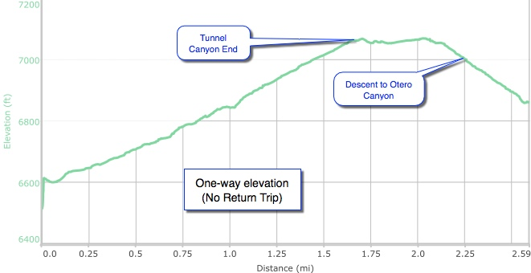

Hike New Mexico
w/ Tom & Ken
Tunnel Canyon Hike



- Jun 18, 2015: Tunnel Canyon trail
- Jun 18, 2015: Mountain vista
- Jun 18, 2015: Starting downhill to Otero Canyon
- Jun 18, 2015: View of Otero from the valley
- https://www.flickr.com/photos/139088815@N08/27240901702/in/photostream/
- https://www.flickr.com/photos/139088815@N08/27240907032/in/photostream/
- https://www.flickr.com/photos/139088815@N08/27267819411/in/photostream/
- https://www.flickr.com/photos/139088815@N08/26731175994/in/photostream/
Tunnel Canyon is one of the many hiking/biking trails offered in the Manzanita Mountain Trails system, part of Cibola National Forest just outside of Tijeras. The trailhead is located on Highway 337 a few miles south of the I-40 exit for Tijeras. This hike virtually parallels the Birdhouse Ridge hike, but at a lower elevation with fewer twists and turns. It links up with the Otero Canyon hike (not included here). There are not many good online reference for the Mountain Trails System, and the hike does not show up in hiking books, though it can be found in some of the hiking apps, such as AllTrails.com and others.